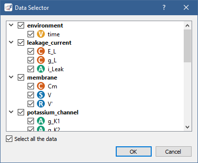

SimulationExperimentView plugin¶
The SimulationExperimentView plugin can be used to run CellML (i.e. a system of ODEs or DAEs) and SED-ML files, as well as COMBINE archives. However, OpenCOR only supports a subset of SED-ML, so only SED-ML files and COMBINE archives generated by OpenCOR are guaranteed to work.
The following topics are covered:
Open a CellML file¶
Upon opening a CellML file and switching to the Simulation Experiment view, OpenCOR checks that it can be used for simulation. If it cannot, a message describing the issue is shown:
On the other hand, if you open a valid CellML file (e.g., [OpenCOR]/models/noble_model_1962.cellml, which is shipped with OpenCOR), the view looks as follows:
It consists of two main parts, the first of which allows you to customise the simulation, the solver(s) and the model parameters, as well as to specify which graphs to plot. The second part is used to plot the requested graphs. In the Parameters section, all the model parameters have an icon associated with them, to highlight their type:


{kind=link}
{kind=link}
{kind=link}
Simulate an ODE model¶
To simulate a model, you need to provide some information about the simulation itself: its starting point, ending point, and point interval. Then, you need to specify the solver(s) that you want to use. The solvers available to you depend on which solver plugins you selected, as well as on the type of your model (i.e. ODE or DAE). If you are dealing with an ODE model and all the solver plugins are selected then CVODE, forward Euler, Heun, and the second-order and fourth-order of Runge-Kutta are available to you:
Each solver comes with its own set of properties, which can be customised.
For example, if you select Euler (forward), you see that it has only one property (Step):
You can start the simulation by pressing F9 or by clicking on the  button.
Then, or before, you can add one or several graphs to be plotted.
All the model parameters are listed to the bottom-left of the view, grouped by components in which they were originally defined.
To add a graph, right click on a model parameter and select against which other model parameter you want it to be plotted.
For example, to create a graph for
button.
Then, or before, you can add one or several graphs to be plotted.
All the model parameters are listed to the bottom-left of the view, grouped by components in which they were originally defined.
To add a graph, right click on a model parameter and select against which other model parameter you want it to be plotted.
For example, to create a graph for V (from the membrane component) against the variable of integration (i.e. time since the simulation properties are expressed in milliseconds), you would do the following:
From there, you can get the information associated with the graph by double clicking on it:

The Model property is used to associate the graph with a particular file.
Its default value of Current means that the graph is associated with the current file.
However, you can explicitly associate it with another file.
A  icon is shown next to the check box when an association cannot be done and next to the
icon is shown next to the check box when an association cannot be done and next to the X and/or Y properties to highlight which model parameter(s) could not be found in the other file.
An  icon indicates that the graph is not locked, i.e. its
icon indicates that the graph is not locked, i.e. its Model property has a value of Current, while a icon is used when a graph is associated with a specific file.
The X and Y properties can be modified either by editing their value or by right clicking on them and selecting another model parameter from the context menu, which can also be used to add or remove a graph, as well as select or unselect the current graph or all the graphs.
{kind=link}
Back to the simulation, you can see that it failed with several model parameters having a value of nan (i.e. not a number).
This is because the solver is not properly set up: its Step property is too big.
If you set it to 0.01 milliseconds, reset all the model parameters (by clicking on the  button), clear the simulation data (by clicking on the
button), clear the simulation data (by clicking on the  button), and restart the simulation then you get:
button), and restart the simulation then you get:
Roughly the same trace can be obtained using the CVODE solver:
However, the simulation is so quick to run that you most probably do not have time to see its progress.
Between the and buttons, there is a wheel that you can use to add a short delay between the plotting of two data points.
Thus, by using a value of 100,000 (or a bigger/smaller value, depending on the speed of your computer), you can run the simulation and pause it at a point of interest:
{kind=link}
Now, you can modify any of the model parameters identified by either the  or icon (i.e. a state or a constant).
Thus, if you set
or icon (i.e. a state or a constant).
Thus, if you set g_Na_max (from the sodium_channel component) to 0 milliS_per_cm2 then you get:
If you want, you can export some or all of the simulation data to a BioSignalML or a CSV file.
To do so, click on the  button.
In the case of BioSignalML, you are asked to provide some (optional) information, as well as specify which model parameters you want to export:
button.
In the case of BioSignalML, you are asked to provide some (optional) information, as well as specify which model parameters you want to export:
In the case of CSV, you only need to specify the model parameters you want to export:
If you want to create other graphs, but do not want them on the same graph panel as the existing one, you can click on the  button to create a new graph panel:
button to create a new graph panel:
You might have noticed that the bottom graph panel has a blue vertical line to its left.
This is to indicate that it is the currently selected graph panel (a graph panel can be selected by clicking on it).
Something else that you might have noticed is that the Graphs section is now empty.
This is because there are currently no graphs associated with the seleted graph panel.
Just for illustration, you can create a graph to plot V (from the membrane component) against V' (also from the membrane component):
You can create as many graph panels (and graphs) as you want.
The current graph panel or all the graph panels (but the first one) can be removed by clicking on the  button.
button.
Simulate a DAE model¶
To simulate a DAE model is similar to simulating an ODE model, except that OpenCOR also needs to solve one or several systems of non-linear algebraic equations (e.g., with [OpenCOR]/models/tests/cellml/simple_dae_model.cellml):
Simulate a CellML 1.1 model¶
So far, we have only simulated CellML 1.0 models, but you can also simulate CellML 1.1 models, i.e. models that import units and/or components from other models (e.g., with [OpenCOR]/models/tests/cellml/cellml_1_1/experiments/periodic-stimulus.xml):
Simulate several models at the same time¶
Each simulation is run in its own thread, which makes it possible to run several simulations at the same time. Simulations running in the background display a small progress bar in the top tab bar while the active simulation uses the main progress bar at the bottom of the view:
SED-ML support¶
An important aspect of modelling is reproducibility. To that end, a simulation can be exported to SED-ML by clicking on the button. The export can then be done either to a SED-ML file or a COMBINE archive, both of which can then be re-run by OpenCOR and any SED-ML capable software (e.g., BioSimulations, SED-ML Web Tools).
{kind=link}
A SED-ML file (or a COMBINE archive) contains all the information needed to reproduce a simulation, i.e. a reference to the model (or even the model itself in the case of a COMBINE archive; the referenced model can be opened by clicking on the  button), the parameters of the simulation, the solver and its properties, the number of graph panels, and the graphs to be plotted in each graph panel.
Thus, once open, a simulation can be re-run by pressing
button), the parameters of the simulation, the solver and its properties, the number of graph panels, and the graphs to be plotted in each graph panel.
Thus, once open, a simulation can be re-run by pressing F9 or by clicking on the button (e.g., with [OpenCOR]/models/tests/combine/noble_1962.omex):
Please note that changes to model parameters (either before or in the middle of a simulation) are not currently supported, and are therefore ignored, if present.
Customise graphs and graph panels¶
By default, the line of a graph is two-pixel wide and blue, as can be seen when plotting i_Na against the variable of integration using [OpenCOR]/models/noble_model_1962.cellml:
However, subsequent graphs use a different line colour.
For example, if you plot i_K and i_Leak against the variable of integration, you get:
The line can be further customised by changing the value of one or several of its properties (Style, Width, and Colour) in the Graphs section.
Possible values for Style are None, Solid, Dash, Dot, DashDot, and DashDotDot:
Colour can be changed manually by providing an RGB or RGBA value, i.e. #RRGGBB or #RRGGBBAA with RR, GG, BB, and AA corresponding to the value of the red, green, blue, and alpha channel of the colour, respectively.
Each value consists of two hexadecimal digits between 0 and f.
For example, the blue colour used for the first graph has an RGB value of #0072bd.
However, an easier way to change Colour is by double clicking on the square next to its value.
This brings up a colour dialog, from which you can choose the colour you want to use:
In addition to a line, a graph can have a symbol rendered at each of its data points.
As for a line, a symbol can be customised by changing the value of one or several of its properties (Style, Size, Colour, Filled, and Fill colour).
Possible values for Style are None, Circle, Square, Diamond, Triangle, Down Triangle, Cross, X Cross, Horizontal Line, Vertical Line, and Star:
A graph panel can also be customised, but for this you need to switch to the Graph Panel section by clicking in the top-right of the Graphs section. This brings up a context menu allowing you to switch between the Graphs and Graph Panel sections:
Many aspects of a graph panel can be customised and this includes various types of colours, styles, widths, etc., as well as whether the legend should be shown, a logarithmic scale used for the X and/or Y axes, etc., as illustrated by running [OpenCOR]/models/tests/sedml/noble_1962_local.sedml:
Note that you can specify some default settings for graphs and graph panels by clicking on the button in the tool bar, or by selecting the Tools | Preferences... menu item and then the SimulationExperimentView section:
{kind=link}
Plotting area¶
The plotting area offers several features that can be activated by:
Synchronising the X and/or Y axes:
Using the context menu.
Using custom axes:
Using the context menu.
Zooming in/out:
Holding the right mouse button down, and moving the mouse to the bottom-right/top-left to zoom in/out; or
Moving the mouse wheel up/down; or
Using the context menu.
Resetting the zoom level:
Double-clicking on the left mouse button; or
Using the context menu.
Zooming into a region of interest:
Pressing
Ctrland holding the right mouse button down, and moving the mouse around.
Panning:
Holding the left mouse button down, and moving the mouse around.
Showing the coordinates of any point:
Pressing
Shiftand holding the left mouse button down, and moving the mouse around.
Copying the contents of the plotting area to the clipboard:
Using the context menu.
Tool bar¶
Run the simulation Pause the simulation
Pause the simulation{kind=link}
{kind=link} Reset all the model parameters Clear the simulation data Add a graph panel Remove the current graph panel or all the graph panels Open the referenced CellML file
Reset all the model parameters Clear the simulation data Add a graph panel Remove the current graph panel or all the graph panels Open the referenced CellML file{kind=link} Export the simulation results
Export the simulation results